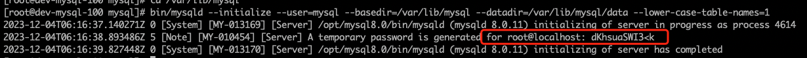

mysql 二进制安装与配置
mysql 各版本下载地址
前期准备
1、依赖c环境
如果没有安装c环境，执行以下命令，部署安装c环境
yum -y install gcc-c++
2、安装 libaio库
如果未安装，在初始化时可能遇到下面的报错：
bin/mysqld: error while loading shared libraries: libaio.so.1: cannot open shared object file: No such file or directory
yum -y install libaio
3、删除系统默认自带的`mariadb``
查询有没有安装 `mariadb``
rpm -aq | grep mariadb
输出如下
mariadb-libs-5.5.68-1.el7.x86_64
如果输出为空,忽略这一步
删除 mariadb
rpm -e --nodeps mariadb-libs-5.5.68-1.el7.x86_64
4、新建mysql用户
# 创建mysql 组
groupadd mysql
# 创建mysql用户
useradd -r -g mysql -s /bin/false mysql
二进制安装
下载二进制文件 👉🏻mysql-8.0.11-linux-glibc2.12-x86_64.tar.gz
wget https://cdn.mysql.com/archives/mysql-8.0/mysql-8.0.11-linux-glibc2.12-x86_64.tar.gz
注: 如果上述方式下载失败，请手动下载后传至服务器
解压
# 解压
tar -zxvf mysql-8.0.11-linux-glibc2.12-x86_64.tar.gz -C /opt/
# 重命名
mv /opt/mysql-8.0.11-linux-glibc2.12-x86_64 /opt/mysql8.0
在myql8.0目录下新建数据目录和加载目录
cd /opt/mysql8.0
mkdir data # 数据目录
mkdir mysql-files # 数据加载目录，由参数secure_file_priv指定
chmod 750 mysql-files # 修改加载目录权限
mkdir tmp # 临时目录
chmod 750 tmp # 修改权限
将/opt/mysql8.0属主修改为mysql用户
cd /opt
chown -R mysql:mysql mysql8.0
在/var/lib目录下新建软链接至/opt/mysql8.0（后续如果安装了多个版本的 mysql，只需要将软链接删除，重新链接至对应版本目录即可）
cd /var/lib
ln -s /opt/mysql8.0 mysql
创建mysqld文件，用于存储pid文件
mkdir /var/run/mysqld
chown -R mysql:mysql /var/run/mysqld
注: 上述文件路径，都在下面配置文件中体现，如有修改，需修改配置文件
准备配置文件
准备配置文件my.cnf，并放到/etc目录下（/etc/my.cnf）
touch /etc/my.cnf
如果存在不需要执行上述命令
下面准备了一份示例 my.cnf 文件，可以根据需要自行修改，几点说明如下：
- default_authentication_plugin，默认的密码认证方式特地设置和旧版本一致，防止某些旧的工具连不上 mysql.
- innodb_buffer_pool_size 设置为 2G（2 个池），自行根据机器情况调整，如果是专属数据库服务器，建议设置为物理内存的 60%~75%
# MySQL configuration file for MySQL 8.0
# For explanations see
# http://dev.mysql.com/doc/mysql/en/server-system-variables.html
[mysqld]
# Server settings
user = mysql
# set server port
port = 3306
# sock file
socket = /var/lib/mysql/mysql.sock
# pid file
pid-file = /var/run/mysqld/mysqld.pid
# log file
log-error = /var/log/mysqld.log
# tmp dir
tmpdir = /var/lib/mysql/tmp
# tmp table size
tmp_table_size = 64M
# install dir
basedir = /var/lib/mysql
# data dir
datadir = /var/lib/mysql/data
# bind address
bind_address = 0.0.0.0
# max connections
max_connections = 3600
# max connect errors
max_connect_errors = 200
# auto commit
autocommit = ON
# table data not save to disk
symbolic-links = 0
# log time format
log_timestamps = system
# transaction isolation
transaction_isolation = read-committed
# When MySQL is restarted or restored, only the first and last binlog files are scanned
binlog_gtid_simple_recovery = ON
# default server character set
character-set-server = utf8mb4
# default server collation set
collation-server = utf8mb4_general_ci
# table swift cache
table_open_cache = 4096
# open files limit
open_files_limit = 65535
# connect timeout
connect_timeout = 9
# default storage engine is innodb
default-storage-engine = InnoDB
# slow log enable
slow_query_log = ON
# Binary log settings
# set server id
server-id = 1
# binlog enable
log-bin = mysql-bin
# binlog format
binlog_format = row
# binglog file size
max_binlog_size = 100M
# Innodb Settings
# innodb tmp dir
innodb_tmpdir = /var/lib/mysql/tmp/innodb
# innodb cache pool size (This value is 80% of the total memory)
innodb_buffer_pool_size = 2G
# Slow query log settings
# slow query enable
slow_query_log = ON
# slow query log file
slow_query_log_file = /var/log/mysql-slow.log
# slow query time
long_query_time = 1
# slow query admin log enable
log_slow_admin_statements = ON
# slow query slave log enable
log_slow_slave_statements = ON
# slow query not using index
log_queries_not_using_indexes = OFF
# lower case
lower_case_table_names = 1
# mysql config
[mysql]
socket=/usr/local/mysql/mysql.sock
# client set
[client]
port = 3306
# server sock file
socket = /var/lib/mysql/mysql.sock
初始化数据库实例（注意记录初始 root 密码
cd /var/lib/mysql
bin/mysqld --initialize --user=mysql --basedir=/var/lib/mysql --datadir=/var/lib/mysql/data --lower-case-table-names=1
初始化完成功，输出如下 
上述图片中可以看到，初始化密码: dKhsuaSWI3<k
注 如果这里初始化时遇到 could not open /var/log/mysqld.log 等报错，可以手动创建此文件并将属主改为 mysql
touch /var/log/mysqld.log
chown -R mysql:mysql /var/log/mysqld.log
touch /var/log/mysql-slow.log
chown -R mysql:mysql /var/log/mysql-slow.log
配置 PATH 环境变量
这里以root用户演示
vim ~/.bashrc
# 配置mysql 环境变量
export MYSQL_HOME="/var/lib/mysql"
export PATH="${PATH}:${MYSQL_HOME}/bin"
# 保存后，刷新下环境变量
source ~/.bashrc
启动 并登录 mysql
使用初始密码登录（如果没记住去/var/log/mysqld.log中找），并修改 root 密码
# 启动mysql
nohup mysqld_safe &
# 使用初始密码登录
mysql -uroot -p'dKhsuaSWI3<k'
# 登录后修改root密码
ALTER USER 'root'@localhost identified BY 'passw0rd';
创建新用户，用于远程登录操作
CREATE USER 'dev'@'%' IDENTIFIED BY 'passw0rd';
GRANT ALL PRIVILEGES ON *.* TO 'dev'@'%' WITH GRANT OPTION;
FLUSH PRIVILEGES;